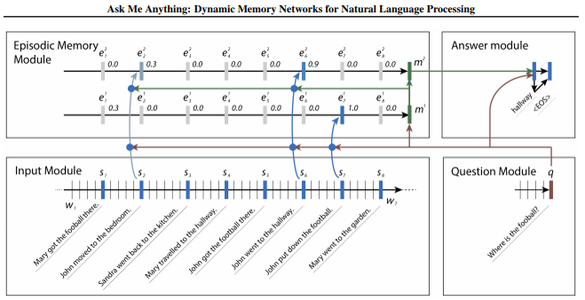
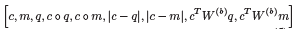
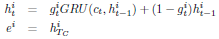

Casts different natural language processing tasks such as sentiment analysis and POS tagging into question answering problem
Create a single joint model for solve these multiple NLP problems

Architecture
For a given input paragraph / passage, each word of each sentence and a question are encoded by separate GRUs
input sentence and question embedding vectors are fed into attention mechanism (two-layer feed forwards neural network) to create a gate to be used in step 3.

Various similarity measures between the input sentence and the question embedding vectors are used as the input vector for two layer NN.
Each word embedding vector of the input sentence is sequentially processed by GRU that is weighted by the gate calculated from the previous step to generate a single episode for each single input sentence.

In Episodic Memory Module, each episode are sequentially processed in GRU to produce final memory.
Additional layer of GRU is stacked in the Episodic Memory Module.
It is an interesting to view different NLP tasks under single perspective (Q&A) with impressive performance
But due to multiple GRU units involved in the entire model, it would require significant amount of training time for its massive parameter space (Perhaps considerably difficult to generalize?)
Why not bi-directional RNN based models instead of stacking two forward directional GRU?